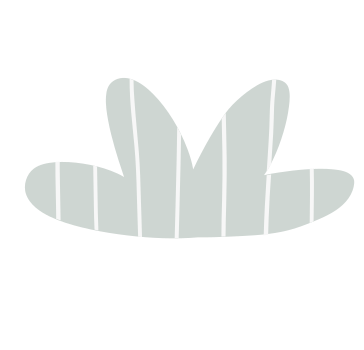

Patricia Saliba, CH, CI, RMT, Owner and Health Coach
My name is Patricia Saliba. I have been a certified herbalist and Iridologist for 32 years. My practice has been primarily focused on soft tissue rehabilitation as I am also a registered massage therapist and have used my herbal training as an adjunct treatment to help my clients recover quickly and get to the source of many of their health issues that are chronic, and may also run concurrently or causative to their initial reason for seeking my services.
My love of plant medicine goes back to my earliest childhood memories. My parents were farmers and more specifically, master market gardeners. My father taught me early on to recognize weeds, in particular their names, what environment they thrived in, what they would take away from the soil etc. I grew to appreciate the wisdom of these plants and soon naturally began to forage and seek new unknown species.
By the time I hit my late teenage years I was starting to grow and cultivate my own herbs for medicine. I was given a plot of land to experiment and grew rows of lavender and chamomile. I made soaps and lotions and all my own herbal tea mixtures.
After completing the 2200 hour program and passing my provincial licensing exams I immediately enrolled in an herbal program taught by a German trained professor at the International Academy of Natural Health Sciences. His focus was native western as well as a basis in eastern Chinese herbs, a complete understanding of their pharmacology. Learning patient's constitutional make-up and biological character to tailor the remedy to the patient was central to the assessment of each case study.
In addition I studied nutrition, iridology, homoeopathy and meridian theory.
Now 32 years later I welcome the opportunity to do one to one coaching with plant medicine, using my experience, my extensive knowledge of the body's anatomy and a deeply intuitive relationship with healing modalities. I look forward to beginning my journey with those seeking the next level of health care, with the harmony of both traditional wisdom and current, unadulterated science to guide us on a path of restorative health.
Book Appointment